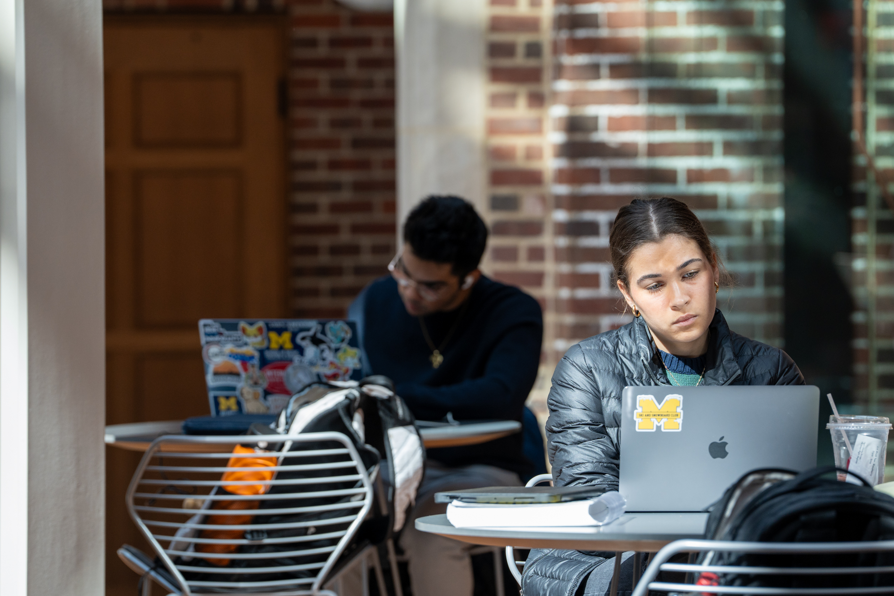

Academic Resources
Information below can be found at
UMSI Tutoring Website.
The Academic Success Team at UMSI is dedicated to supporting students
inside and outside of the classroom. This site is dedicated to
connecting students to tutoring and academic support resources.

Click UM student support official website to read more.
Available academic resources at UM:
Basic Needs
Critical Incident Support & Conflict Management
Support for students who are experiencing or have been impacted by a conflict or critical incident.
Finance
Financial resources to help with immediate and long-term needs, such as emergencies, college funding and employment.